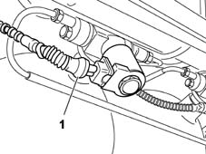

Check operation of coil winding of methane cut-off solenoid on cylinder
- Path
- Test > 10 ENGINE UNIT > 1042 METHANE GAS CANNISTER AND TUBES > Check operation of coil winding of methane cut-off solenoid on cylinder
- Kind
- test / check procedure
- Applies to
- engines: 1.6 16v; all production periods; only with equipment: BIPOWER
- Interactive page
- https://sloeber94.github.io/elrnDB-fMltpl/en/#/186003363
Applies to: engines: 1.6 16v; all production periods; only with equipment: BIPOWER
1. Disconnect the electrical connection of the solenoid on the methane cylinder.
Check the winding resistance is between 9.2 and 13.8 Ohm at 20 °C. If the resistance is too low, this indicates a short-circuit in the coils (or part of the coils) in the winding. Non-continuity indicates a break in the coil: in both cases, the coil cannot excite the solenoid and should therefore be replaced.
